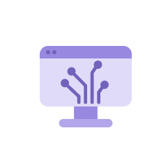

LG Energy Solution builds a circular battery ecosystem in line with
carbon neutrality and drives sustainable growth across diverse industries.
Business Resilience
Risk Management System
LG Energy Solution has established a risk management system and formed dedicated organizations to build a sustainable management framework. Through this system, the company identifies, prevents, and monitors enterprise-wide risks in advance. Under the Enterprise Crisis Management System, LG Energy Solution analyzes risks in areas such as quality, safety, supply chain, business, finance, and social and environmental factors, and carries out appropriate response activities. In risk response, the company evaluates not only financial impacts but also sustainability factors such as safety and the environment, assessing the level of risk accordingly.
Placing the safety of employees, local communities, and consumers as its top priority, LG Energy Solution has appointed a Chief Risk Officer (CRO) as the executive responsible for risk management and operates a specialized organization for proactive risk control. The company has designated quality, environmental safety, and compliance as key risks, and is strengthening its quality management system, enhancing environmental and safety measures in line with business expansion, and building partnerships to stabilize its supply chain.LG Energy Solution will continue to advance its risk management framework to minimize potential risks arising from business operations

Risk Management Process
-

Risk Identification
LG Energy Solution operates a company-wide risk management system to identify and mitigate risks and increase sensitivity to potential risks that may evolve into crises. All employees are well informed of our and use it as the basis of their work. We pinpoint risks in various areas by analyzing our mid- to long-term strategies and work processes and conducting interviews. Further, in order to prevent risks and mitigate damage in the event of a crisis, we focus on assessing changes in the business environment when developing medium-to long-term strategies and business plans.
-

Crisis Response
To prevent the escalation of crises and quickly normalize situations, LG Energy Solution established corporate crisis management regulation. In the event of a crisis, our corporate crisis response system is initiated chaired by company Emergency Committee. The relevant department should immediately share the outbreak of crisis with the Risk Management Committee of the headquarters. When responding to key risks, the first priorities are the life and safety of customers, local communities, and members.
-

Post-crisis
ManagementOnce the crisis is over, the risk management organization monitors the process of implementing measures to prevent recurrence and verifies the results. The organization also lists up inventory in emergencies and impacts, develops scenarios including the decision-making process of the company Emergency Committee, and conducts mock training sessions to improve its crisis response capabilities. Furthermore, we prevent the recurrence of similar crisis by updating our manuals and systems for crisis response and horizontally carrying out improvements.
-

Strengthening Risk
Management
SystemLG Energy Solution acquired certification on the business continuity management system (BCMS, ISO 22301) for the headquarters and domestic manufacturing plant in December 2021. We plan to obtain additional certifications for our overseas business sites by establishing practical risk management frameworks at facility level and enhancing our risk management activities.